Mi familia esta con formada por cuatro personas, mi padre que se llama Sergio Rodriguez Losoya, mi madre que lleva por nombre Sabina Gamez Barraza,
mi hermano Sergio Jesús Gabriel Rodriguez Gamez y yo Saby Rosario Guadalupe Rodriguez Gamez. Mis padres se casaron el 7 de octubre de 1995.
Ellos se conocieron cuando trabajaban en un empaque que se llamaba San Javier, mi papá era encargado de cuartos fríos y mi mamá empacaba y rezagaba el
producto que llevaban a ese lugar. Duraron un año de novios y decidieron casarse mi mamá con 18 años de edad y mi papá con 24 años que ese día de la
boda los estaba cumpliendo años.
Mi padre es hijo de José Félix Rodriguez Mexia(+) y de María de Jesús Lozoya Gamez. Mi abuelo nació en la ciudad de Mazatlán
pero fue criado en la comunidad de Pueblo Yaqui que se encuentra en Obregón Sonora, él sabía hablar la lengua indígena de esa comunidad. Mi abuela es
nacida en Culiacán y vivía en el pueblo de El Carrizal antes de venir a vivir a Ruiz Cortines. Mi abuelo era aproximadamente 22 años mayor que mi abuela. Mi abuelo
ya había tenido una familia antes cuando vivía en Obregón pero se separó de la que era su esposa y se fue a trabajar al Carrizal de donde era mi abuela, ahí
se conocieron y decidieron casarse. Mis abuelos tuvieron seis hijos donde mi papá fue el cuarto en nacer, en la foto solo se encuentra cuatro ya que la única mujer
que ellos tuvieron migro a Estados Unidos, ella tiene aproximadamente 10 años viviendo allá, mi otro tío
no se encontraba en ese momento. Siempre he sido la nieta más consentida por mis abuelos, siempre querían que estuviera con ellos y me regalaban muchas cosas,
a mi papá no le gustaba que hicieran eso porque no les daban nada a mis otros primos aunque estuvieran conmigo y eso se miraba mal.
Mi mamá es hija de Baldomero Gamez Osuna y Francisca Barraza Lugo. Mi abuelo nació y creció en un lugar llamado Los Palillos, Sinaloa de Leyva
donde nada más había dos casas y mi abuela nació en La Vainilla, Sinaloa de Leyva y creció en un rancho llamado Las Vigas en la sierra. Cuando mis abuelos se casaron
se fueron a vivir a Bacubirito Sinaloa de Leyva, que fue donde nació mi mamá.Cuando ya no hubo mucho trabajo en esa comunidad se vinieron a Ruiz Cortines
y es donde radican actualmente. Mis abuelos maternos tuvieron ochos hijos de los cuales mi mamá es la segunda, mis abuelos perdieron una hija de cinco años a causa de una
enfermedad del corazón, tengo un tío que migro a Estados Unidos tengo aproximadamente nueve años que no lo miro. Tres de mis tíos radican en Ensenada, Baja California.
A diferencia de mi abuela paterna, mi abuela materna no solo consiente a un nieto sino a todos por igual.
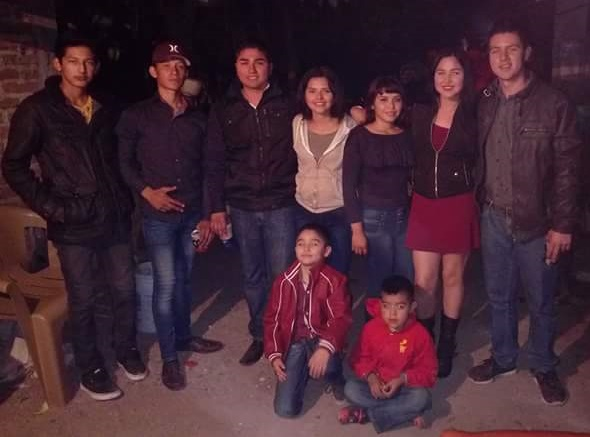
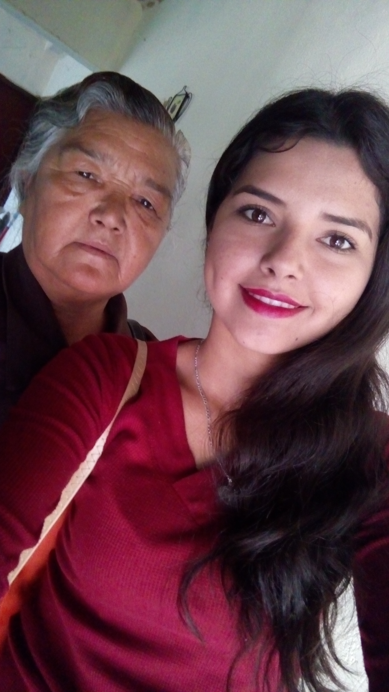
Los papás de mi abuela materna son originarios de Las Vigas y Los Palillos Sinaloa de Leyva. Sus nombre son Santos Barraza(+) y Petra Lugo.
Hoy solo vive mi bisabuela ya que mi bisabuelo falleció en 2011.
Mi hermano como ya lo mencione tiene por nombre Sergio Jesús Gabriel Rodriguez Gamez, actualmente tiene 14 años nació en junio de 2002,
él está estudiando tercer año de secundaria. Cuando llego a nuestras vidas nos alegro mucho, es un gran hermano.
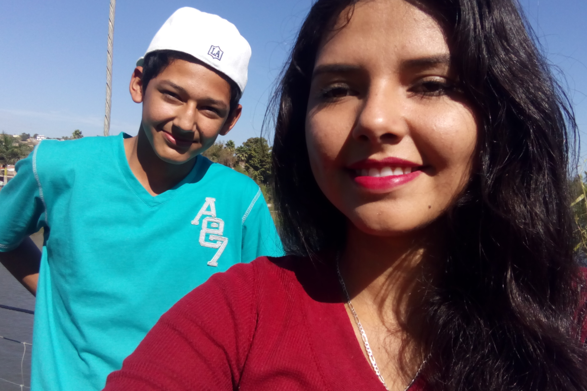
Mi familia es muy unida, nos justa mucho salir a pasear, salir a comer, tener un día divertido juntos y sobre todo platicar de como estuvo
nuestro día. Nos justa mucho festejar nuestros cumpleaños y compartir muchos momentos juntos. Cuando mi papá tenia un buen trabajo acostumbrábamos
en cada verano salir de vacaciones, visitábamos familia en El Fuerte, Bacubirito, Culiacán, El Dorado, etc. Acostumbrávamos que cuando
llegábamos a Culiacán lo primero que hacíamos era ir a la iglesia de la Lomita a visitar a la virgen de Guadalupe y le llevábamos flores.
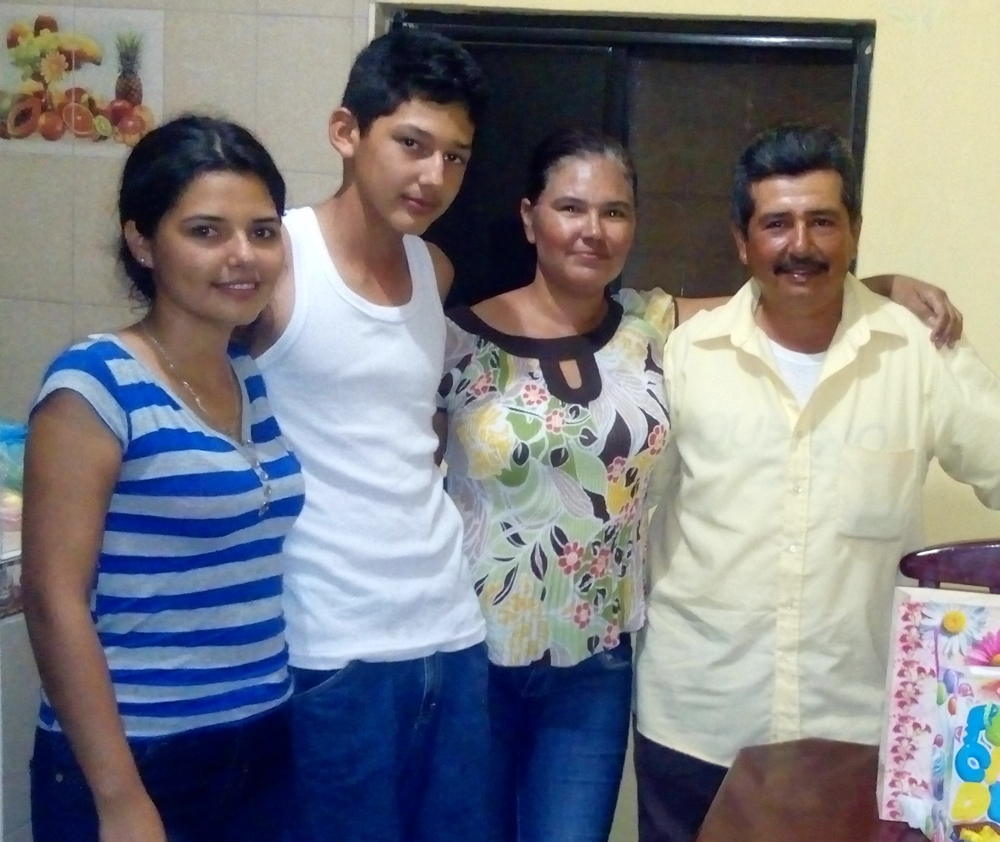
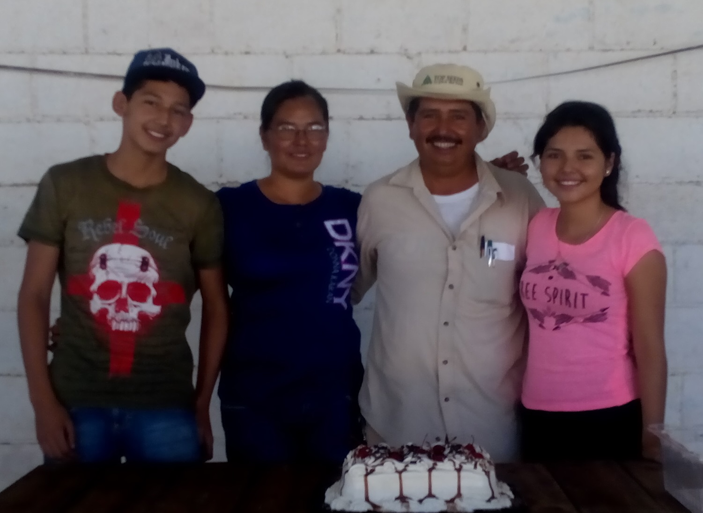
En el año de 2011 perdí a mi abuelo paterno, fue una gran pérdida para todos nosotros ya que estábamos encariñados demasiado con él,
el enfermo y se puso muy grave, cuando estaba en el hospital internado me mandó llamar porque como mencione antes yo era su nieta consentida y quería verme,
mis papás no querían que fuera porque no querían que mirara a mi abuelo mal pero mis tíos le dijeron que cumplieran la voluntad de mi abuelo,
en ese entonces yo tenía 14 años era menor de edad y no me dejaban subir al cuarto, tuvieron que hablar con los encargados y explicarle la situación
de porque necesitaba entrar y fue cuando pude entrar a ver a mi abuelo. Cuando lo mire me dijo que me encargaba a mis primos que los llevara por buen camino que les
enseñara cosas buenas que los alentara al estudio y a ser buenas personas, también me encargo que me superara en la vida que lograra todo lo que me propusiera
en la vida, me pidió perdón por no poder asistir a mis quince años que serían en Diciembre de ese mismo año, eso fue lo que más me dolió ya que
con esas palabras se estaba despidiendo de mí. Dos días después de haber ido a ver a mi abuelo al hospital falleció, la fecha fue el 6 de enero
de 2011.


 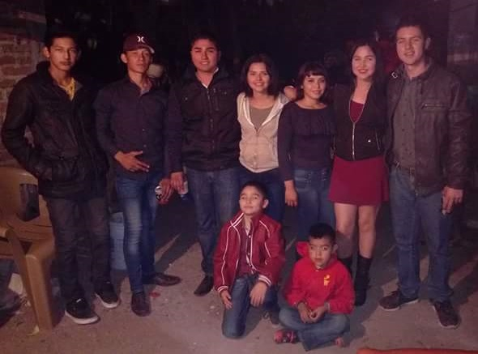
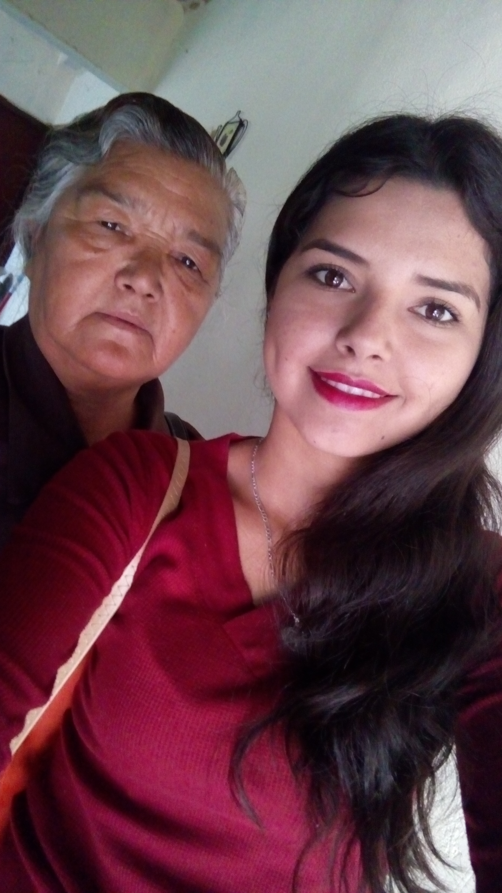
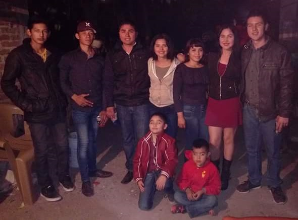
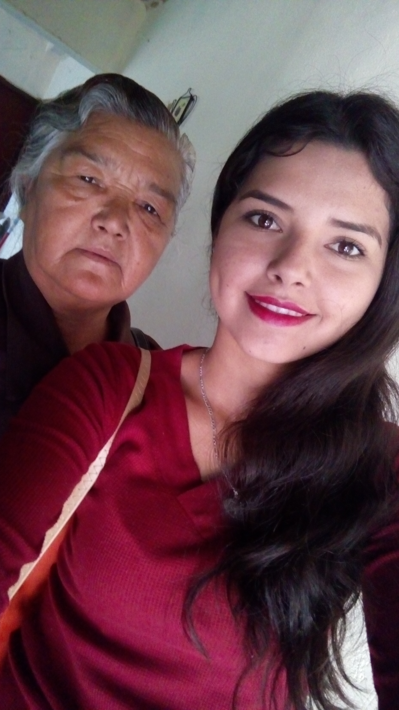

 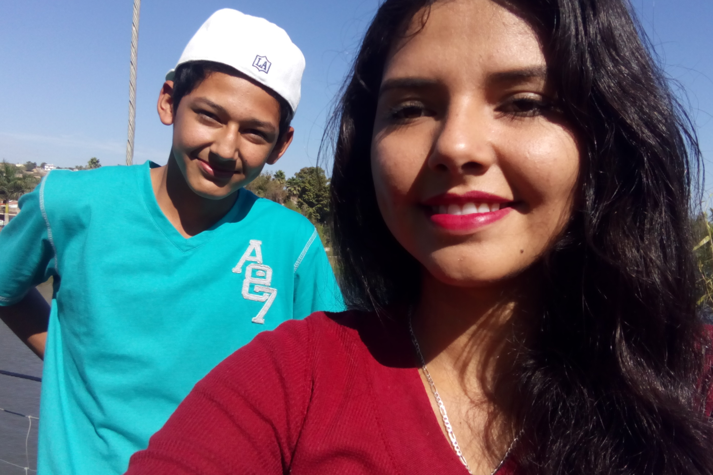
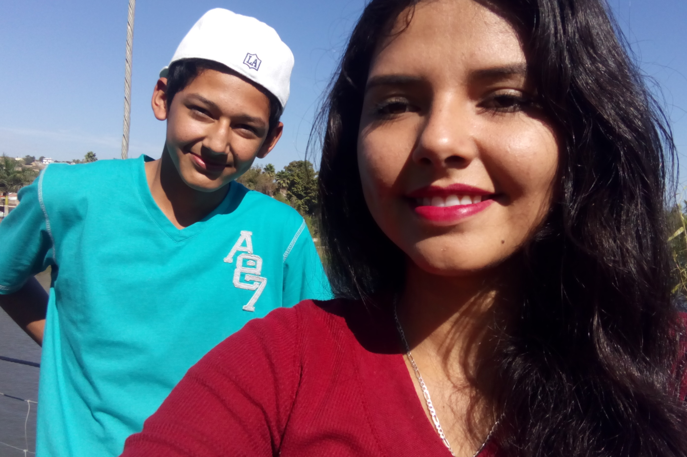


 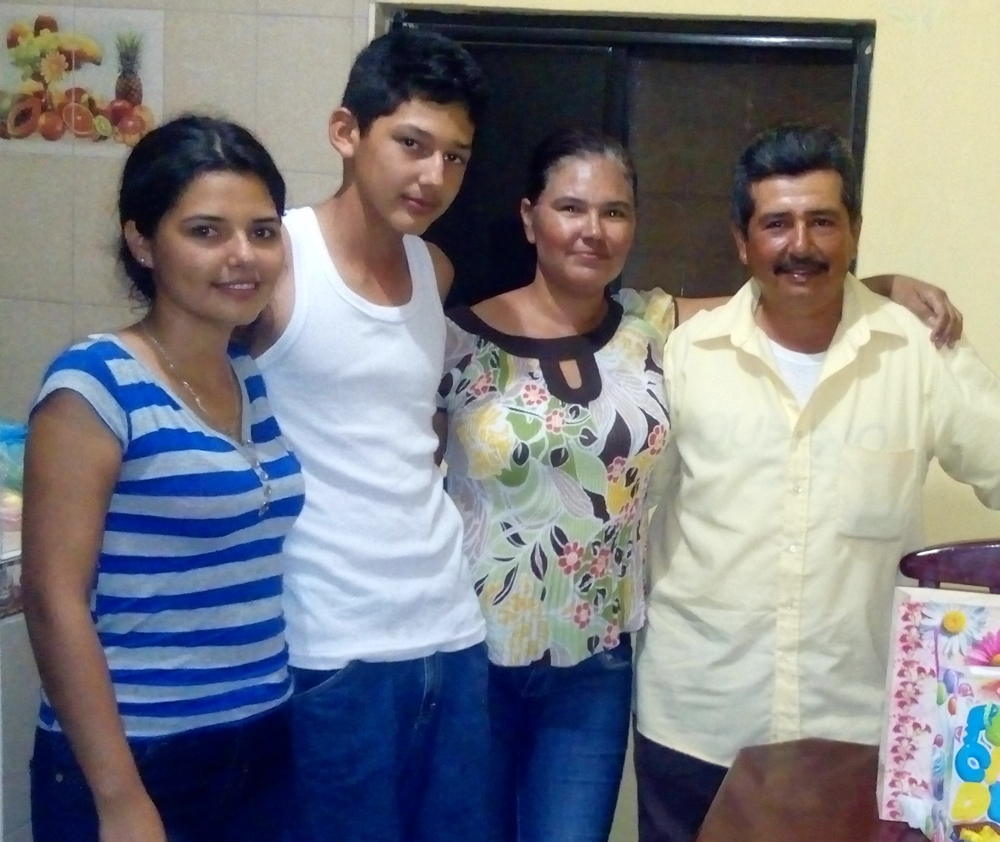
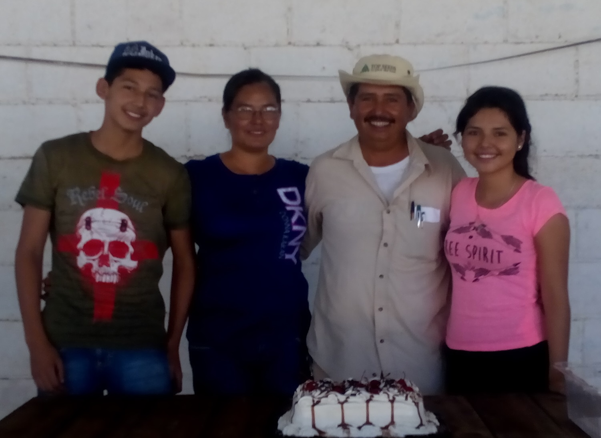
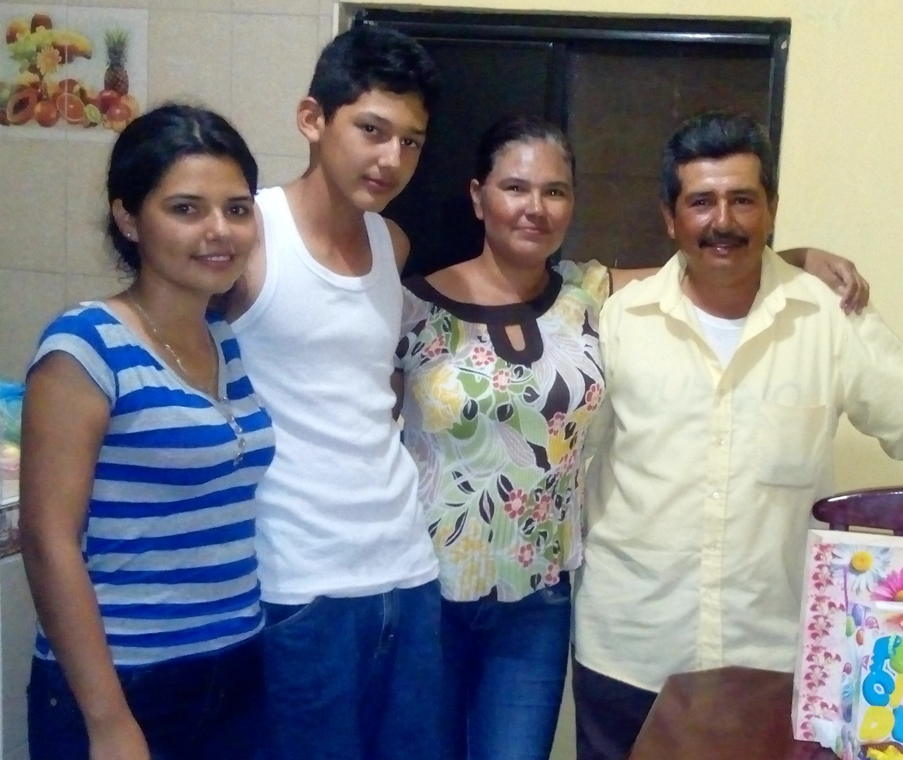
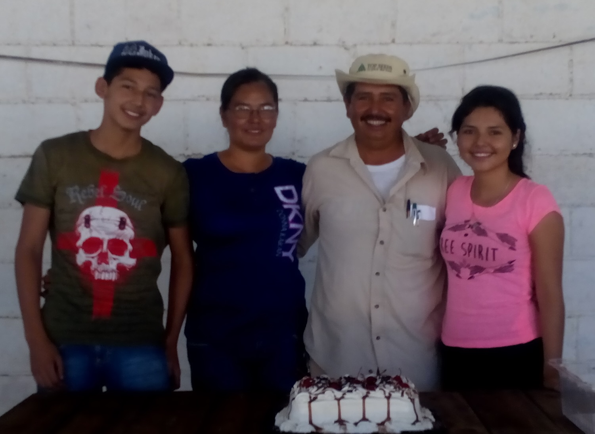